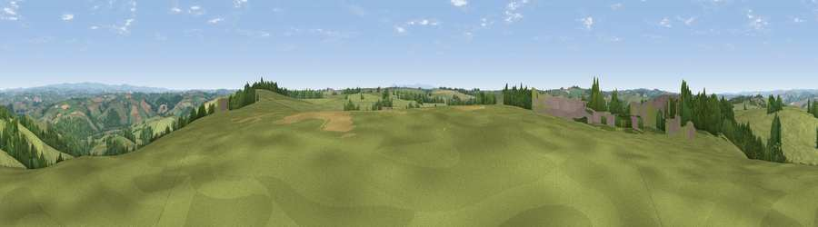

Viewpoint near High Bickington
#14430 in England · top 26% of its area beats it · near High Bickington · access?Where it is
The exact computed spot (SS 60325 20375). Click the marker for map links.
Public access: no public right of way or access land is recorded at this exact spot — it may be on private land. Computed from Natural England's CRoW access layer and OpenStreetMap rights of way — not the legal definitive map. Always verify locally.
The view, rendered

A 360° render of this exact spot computed from the terrain model, tree cover and land cover — summer colours, afternoon light, calibrated against photographs of famous viewpoints. Real trees, hedges and buildings will differ in detail.
The panorama
Grey silhouette: terrain skyline in each direction (720 bearings, Earth curvature and refraction included). Dashed green: skyline with trees (+15 m) and buildings (+8 m) as obstacles. Blue strip: how far the ground is visible on each bearing.
Where the view opens
Wedge length = distance to the farthest visible ground on that bearing (vegetation-aware). Rings at 10, 25 and 50 km.
What fills the view
76% grassland · 15% woodland · 6% cropland · 2% built-up
Angular shares of the visible panorama (visual magnitude), not map area. Landscape diversity 0.33 (0–1 Shannon).
Key numbers
More beautiful places nearby
The staircase of upgrades: each row has a higher view potential than everything closer. Driving times are estimates from straight-line distance, calibrated against real road routing — check an actual route before setting out.
| Place | Direction | Drive | Score |
|---|---|---|---|
| Viewpoint near High Bickington | E · 1 km | ~3 min | 62.2 |
| Viewpoint near Burrington | SE · 4 km | ~9 min | 66.4 |
| Viewpoint near High Bullen | W · 8 km | ~16 min | 71.2 |
| Viewpoint near Landkey | N · 9 km | ~18 min | 74.0 |
| Codden Hill | NNW · 9 km | ~18 min | 81.3 |
| Viewpoint near Parkham | W · 22 km | ~37 min | 81.7 |
| Viewpoint near Bucks Mills | W · 23 km | ~38 min | 84.0 |
| Viewpoint near Woolacombe | NW · 26 km | ~42 min | 84.7 |
50.96582, -3.99047 · source: screening · position refined by local search. Computed location — check access rights before visiting.